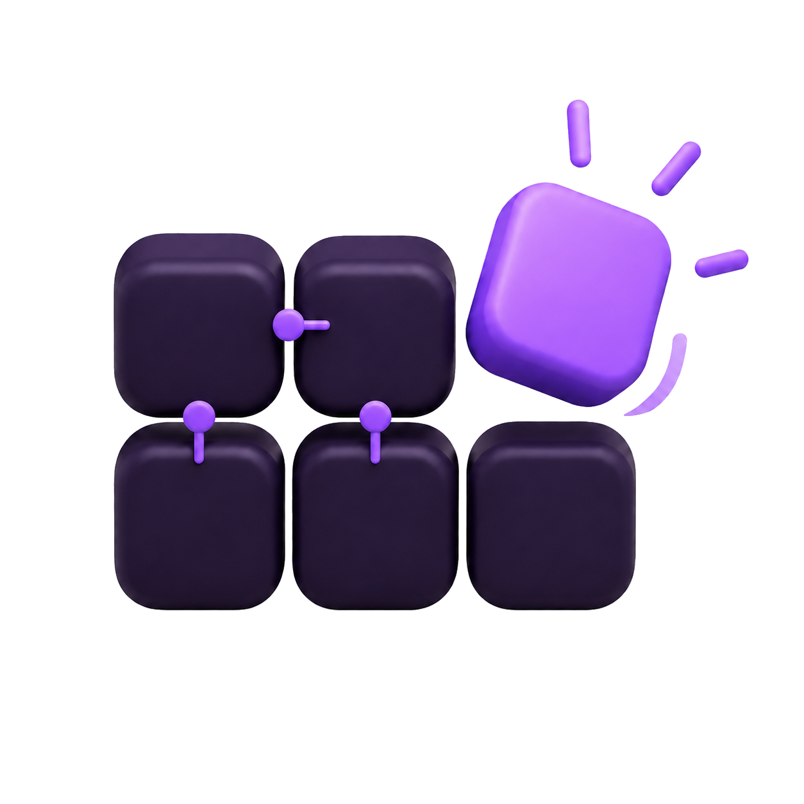

Roberto Infante
Cognitive computing · decision-making in humans and machines
rdji@uw.edu · CV · GitHub · LinkedIn

I study how humans and machines move from uncertain information to a committed decision. When does a system know it has enough evidence to commit? What makes that commitment reliable? I build controlled environments to measure it, and I care about the semantic structure and memory that sit between evidence and a decision.
Previously I built and shipped data-driven products end to end as a technical founder. I am now moving into research in computational cognition.

Clusterwords
A controlled environment for studying decision-making under uncertainty. A grid of words hides several secret groups; humans and AI agents play the exact same boards, so every match becomes a process-level comparison of how a mind moves from ambiguous information to a committed answer. Difficulty is manipulated along two independent axes — combinatorial (board size) and semantic (structure, margin, distractors) — and boards are machine-generated to reduce overlap with any model's training data.
Working papers
Gentags: Discrete Semantic State for Constraint-Sensitive Decision Pipelines 2025 – 2026
First-author preprint introducing Gentags, a representation that compresses source text into short, evidence-grounded semantic units used as inspectable intermediate state in LLM decision pipelines. In a controlled study isolating representation structure, Gentags raised agreement with full-evidence decisions to 79.5% (vs. 52.3–61.6% for RAKE/YAKE/TF-IDF) and hard-constraint satisfaction to 97.3% (vs. 84.7–89.3%). [PDF]
Other projects
Dynamic Information 2024
An LLM agent that builds and self-updates a knowledge/decision graph with an explicit hypothesis structure for Bayesian-style reasoning. Its limits motivated the shift to studying commitment under uncertainty directly.
Recommendation System & Smart Filters — UW MSIM Capstone (sponsor & lead) 2025 – 2026
Directed two capstone teams applying the Gentags approach to a live product, shipping a recommendation system and categorical/nudging filters now in production.
Background
- Co-founder, Software Engineering — Voraa. Sole technical founder of a B2C mobile app (Flutter), built from zero with product, engineering, and data systems owned end to end.
- Python Engineer (freelance) — Saba. Migrated a public-opinion analytics platform from SPSS/R to Python with automated, real-time reporting.
- University of Washington. M.S. Information Management, AI (on leave) · B.S. Information Sciences, Data Science.